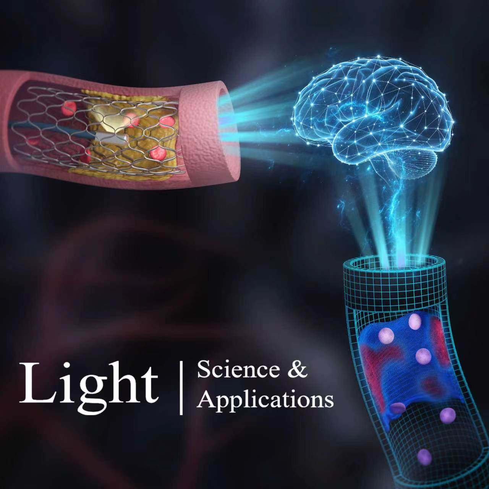
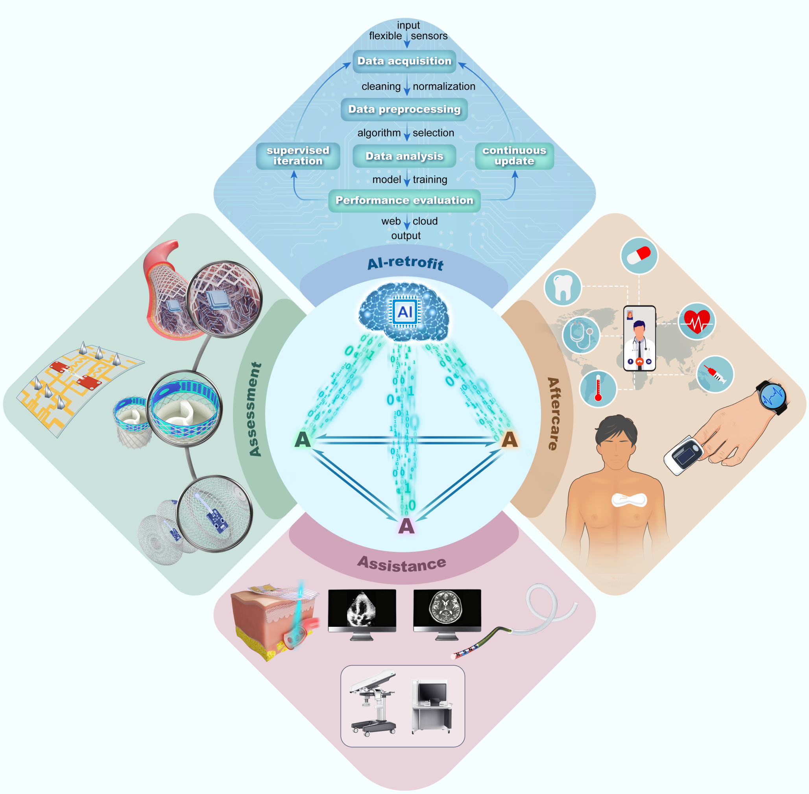
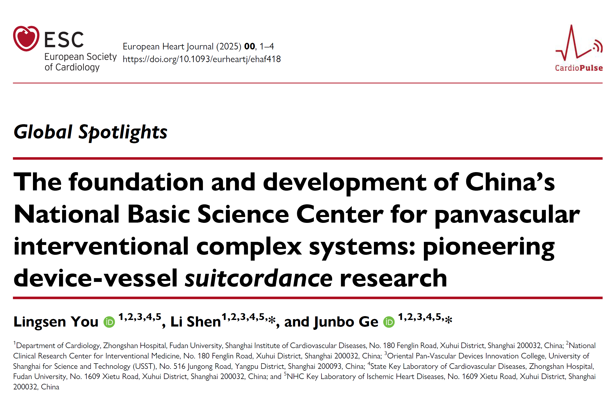
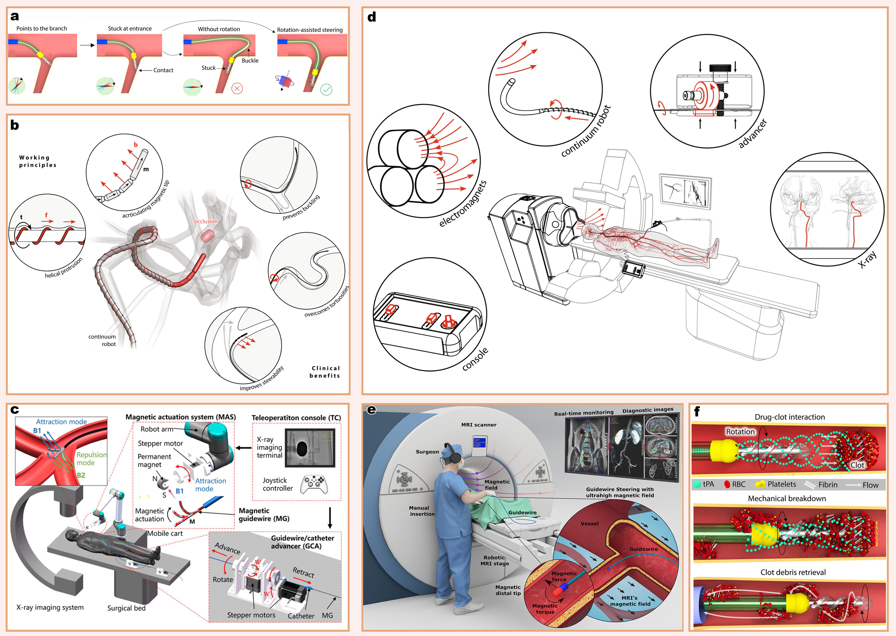
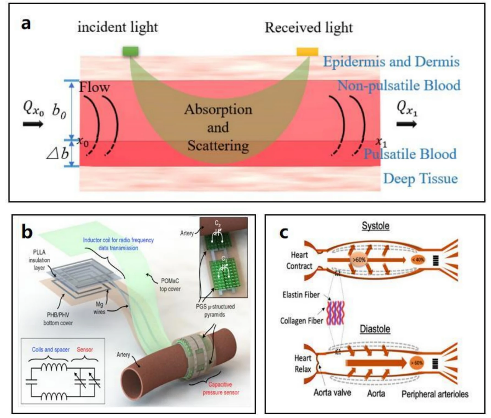
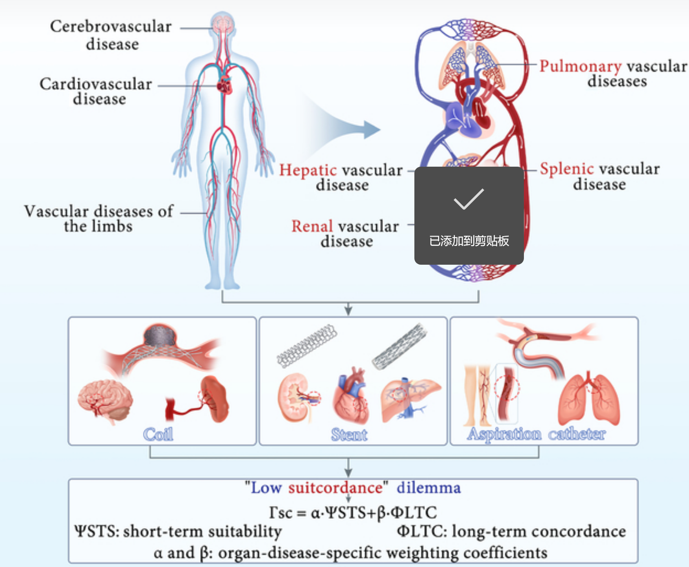

About Me
I am an Interventional Cardiologist and Research Fellow at Zhongshan Hospital, Fudan University.
Currently, I serve as the Scientific Secretary of the National Basic Science Center for Panvascular Interventional Complex Systems, working directly under the leadership of Prof. Junbo Ge (Academician of CAS). In this role, I assist in coordinating national-level research initiatives while conducting my own translational research.
My research bridges the critical gap between biomedical engineering and clinical cardiology. I specialize in translational medicine, spanning from large animal models (swine/canine) for preclinical validation to clinical investigation of novel interventional devices and flexible electronics.
My goal is to establish the "Device-Vessel Suitcordance" framework and accelerate the bench-to-bedside translation of next-generation medical technologies to significantly improve patient outcomes.
Scientific Management Interventional Cardiology Translational Medicine AI in Healthcare Flexible Electronics
Interactive Clinical Tool
Vascular Innovate App
To bridge the gap between engineering concepts and clinical practice, I developed Vascular Innovate, a web-based interactive application. It visualizes the "Device-Vessel Suitcordance" and assists in translational interventional medicine.
Try it Now Mobile & Desktop ReadyNews
- [Jul 2026] Preparing for an upcoming research visit to the group of Prof. Patrick W. Serruys at University of Galway, Ireland (documentation in progress).
- [2026] Our article on intelligent photonics and digital twins in panvascular disease was accepted by Light: Science & Applications (Nature Portfolio, IF 24).
- [Mar 2026] Thrilled to receive the Best Cover Article Award (2024-2025) from Advanced Fiber Materials (IF: 21.3) for our work on intelligent panvascular fibers!
- [Feb 2026] Entrusted by Academician Junbo Ge, I am currently in Europe visiting esteemed professors and long-standing international collaborators.
- [Jan 2026] Our work on the "FLOW Framework" was accepted by Science Bulletin.
- [Jan 2026] Presented at CSI America 2026 in Orlando, USA.
- [2026] New paper published in npj Flexible Electronics.
Selected Publications

From intravascular imaging to adaptive vascular care: intelligent photonics and digital twins in panvascular disease. Light Sci. Appl. (2026, in the press).

4A tetrahedron system: a synergistic framework for panvascular intervention empowered by flexible electronics. npj Flex. Electron. 10, 35 (2026).

The foundation and development of China's National Basic Science Center for panvascular interventional complex systems: pioneering device-vessel suitcordance research. Eur. Heart J. 46, 3400–3403 (2025).

The FLOW framework: a panvascular-on-a-chip platform to model systemic disease and guide panvascular interventional device suitcordance. Sci. Bull. 71, 654–670 (2026).

High-suitcordance intelligent fibers for panvascular disease monitoring-intervention. Adv. Fiber Mater. 7, 1042–1072 (2025).

High suitcordance for panvascular full-watershed organs: a new interventional perspective. Research 8, 0974 (2025).
Honors & Awards
Beyond Medicine
⚽ Football: An active amateur player, proudly representing Zhongshan Hospital in Shanghai's municipal football competitions.
🏊♂️ Swimming: A passionate swimmer, finding that the endurance built in the pool perfectly complements the stamina required for complex surgeries and translational research.
🌍 Global Explorer: Having journeyed through over a dozen countries, I am driven by an endless curiosity for diverse cultures and natural wonders. From the ancient ruins of Rome to the breathtaking Swiss Alps, my footprint continues to expand in a lifelong pursuit of global discovery.